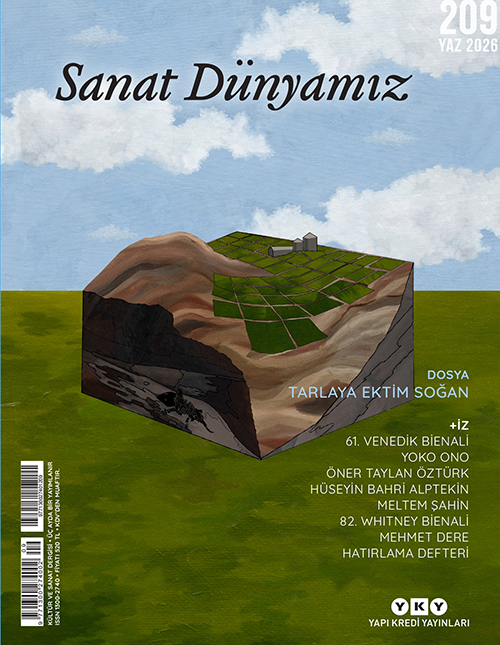
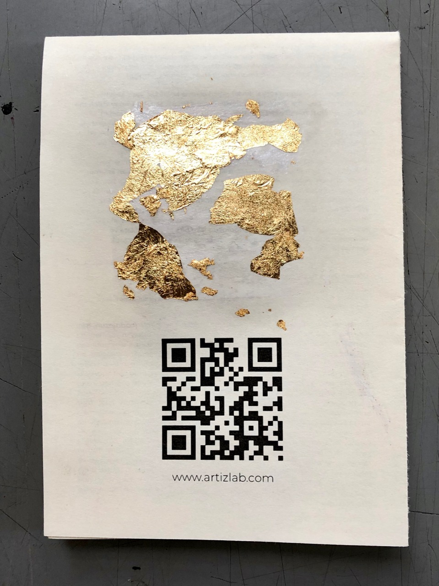
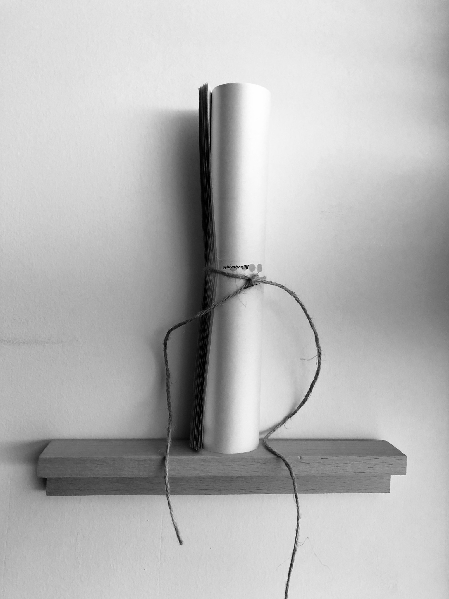
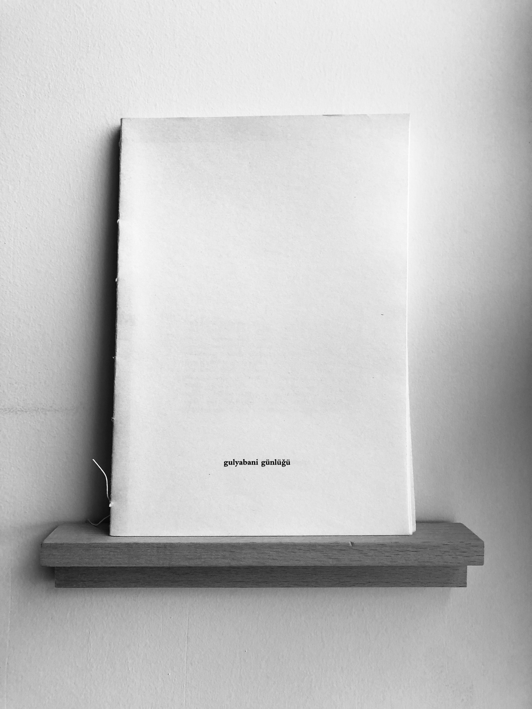
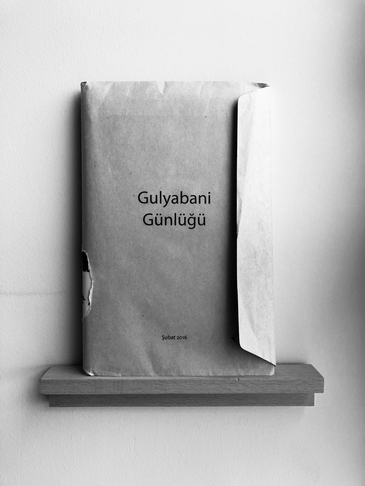
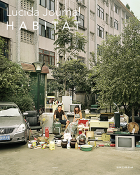
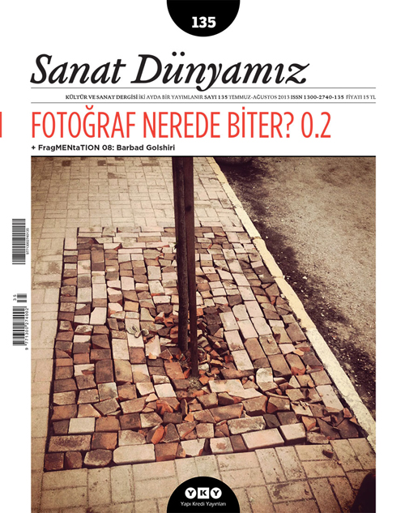
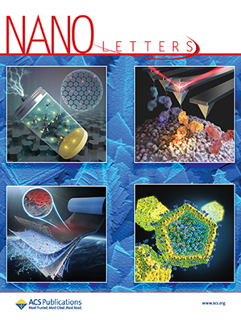
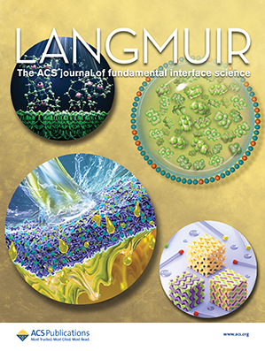
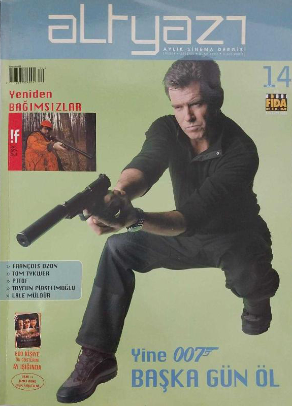

Ayaklar Baş Olursa Kıyamet mi Kopar?
2026, Sanat Dünyamız 209

2026, Sanat Dünyamız 209

2019, exhibition pamphlet containing fictive texts

2018, Gulyabani Günlüğü III

2017, Gulyabani Günlüğü II

2016, Gulyabani Günlüğü I

2015, Lucida Journal: HABITAT

2013, Sanat Dünyamız 135

2008, Nano Letters 8(1)

2007, Langmuir 23(10)

2003, Altyazı 14
